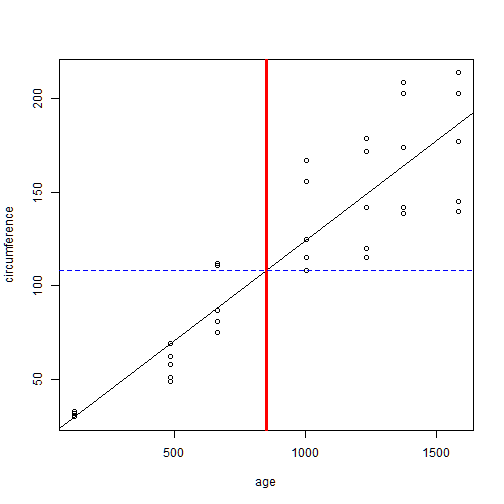

Predicting Tree Circumference by Age
A Shiny App
by Sarah F
What my App Does
This app uses data from the "Orange" data set in the R package datasets. It first calculates a linear model predicting circumference based on age of the orange trees. Then it uses the following features:
- A slider input allows the user to select an age within the age range of the data, in multiples of 10
- The app outputs the following:
- a. A confirmation of the age value you selected
- b. The predicted circumference value
- c. A plot showing the data, the model used, the age selected and the predicted circumference.
A Demo
The code used in the app does the following:
data(Orange)
lm.1<-lm(circumference~age, data=Orange)
predict.lm.1<- function( age ) {
as.vector(lm.1$coef[1])+as.vector(lm.1$coef[2])*age
}
Input an age of 850
predict.lm.1(850)
## [1] 108.1544
Demo Part 2, Plot Output
plot(circumference~age, data=Orange)
abline(lm.1); abline(v=850, col="red", lwd=3); abline(h=predict.lm.1(850), col="blue", lty=2)

Why you Need This App
You need this app for the following reasons:
- You are an orange farmer and need to be able to predict tree growth based on age. If you're not an orange farmer, why not? It's obviously the only profession that matters (aside from data scientist)
- You don't have time to be rerunning this code and changing the age values every time you need a new prediction, you have oranges to farm!
- It shows you a very nice graph so you can get an idea of where your tree is and where it's likely to go as time progresses
- It's super sweet. Like your oranges.
Thank you!